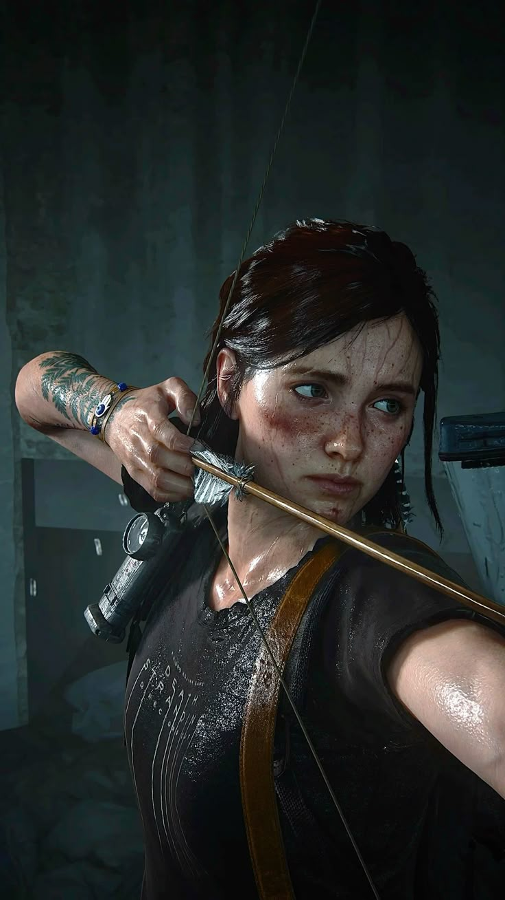

ELLIE WILLIAMS
En esta entrega Ellie es la protagonista principal, de la historia en la que nos muestra otro lado de Ellie, corrompida por la venganza y el odio se nos muestra una Ellie mas agresiva y violenta, que no duda en matar a quien se le interponga en su camino pero a la vez sensible y vulnerable mostrando su lado mas humano y frágil en diversos momentos.
Saber más